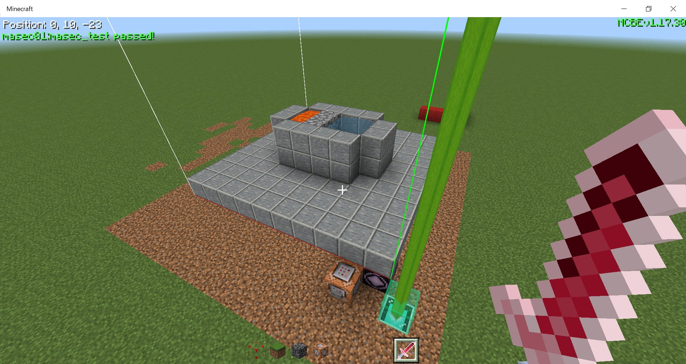

MinecraftBE - GameTest解説#1
目次は右上の「≡」から！
※アドオン中級者向け
アドオンの基礎が分かっている前提です。マニフェストの書き方とかは教えません。
JavaScriptの知識も基礎ぐらいは要求するかもしれません......
はじめに
GameTestというのはそもそも、専用のストラクチャを用意してコマンドでテストを実行し、アドオンなどの動作を確認する目的で追加されたようそです。
ところが、それらのストラクチャとコマンドがなくても動かせるということが分かったのが始まりです。

いまとなっては当たり前みたいなところがありますが、割と情報がないものなのでこういう解説があると助かるんだろうなと思いました。
以前に一度書いたGameTestの記事からの引用「GameTestとは？」
詳しくは忘れたけど、v1.17のベータぐらいで追加された超ニッチコンテンツです。今はある程度の要素が正式リリースバージョンで使えるはずです。
もともとは、JavaScriptというホントのプログラミング(言語)を使ってプログラムを作り、専用のストラクチャセットを使ってワールド内でアドオンのコンテンツを検証するみたいなものです。
アドオンの検証なんて普通にできるので正直いらないと思いますが、どこかの誰かさん(複数)があることに気づくわけです。
本当にGameTestのテストを実行をしないとJavaScriptは動かないのか？？
なんということでしょう、テストを実行していなくともJavaScriptが読み込まれるではありませんか(そんなに驚くことでもないけど)。
簡単な原理の説明とかは書くのをやめました。どうせ長文になるので。
準備
マニフェストに違いアリ！
実は、JavaScriptを特別に使うので、普通のビヘイビア用からいくつか編集する必要があります。
Dat
manifest.json
{
"format_version": 2,
"header": {
"description": "",
"name": "MyGameTestAddon",
"uuid": "5ef4c2d7-f5fa-40f3-8a14-cc97ea0fedb6",
"version": [ 0, 0, 1 ],
"min_engine_version": [ 1, 18, 20 ]
},
"modules": [
{
"description": "",
"type": "javascript",
"uuid": "1c12f92a-d060-40b4-9c53-ad27793134ad",
"version": [ 0, 0, 1 ],
"entry": "scripts/Main.js"
}
],
"dependencies": [
{
"uuid": "6f4b6893-1bb6-42fd-b458-7fa3d0c89616",
"version": [ 0, 1, 0 ]
},
{
"uuid": "b26a4d4c-afdf-4690-88f8-931846312678",
"version": [ 0, 1, 0 ]
},
{
"uuid": "2bd50a27-ab5f-4f40-a596-3641627c635e",
"version": [ 0, 1, 0 ]
}
]
}
① modulesのtypeをjavascriptにする
② modulesのentryを追加して、動かすスクリプトのファイルパスを指定する(オススメはscripts/〇〇.js)。
③ dependenciesに三つの依存関係を追加。UUIDは変えちゃダメです！
GameTestだけのパックならこれでいいんですが、同時にアイテムなどを追加したいという場合はmoduleを追加する必要があります。
"modules": [
{
"description": "",
"type": "javascript",
"uuid": "1c12f92a-d060-40b4-9c53-ad27793134ad",
"version": [ 0, 0, 1 ],
"entry": "scripts/Main.js"
},
{ // 要するにいつもの
"description": "",
"type": "data",
"uuid": "2d25ea17-1b1c-4c2c-b768-86c1640e6d6d",
"version": [ 0, 0, 1 ]
}
],
スクリプトの場所
先ほどちらっと言いましたが「scripts/〇〇.js」がオススメです。ビヘイビアパックに入れてください。
ビヘイビア
┣ manifest.json
┣ pack_icon.png
┗ scripts
┗〇〇.js
┣ manifest.json
┣ pack_icon.png
┗ scripts
┗〇〇.js
スクリプトを書く
まず初めはやっぱり「ワールドに入ったらHello, world!」ですね。
Dat
scripts/Main.js
import { world } from "mojang-minecraft";
let time = 0;
world.events.tick.subscribe(eventData => {
if(time < 200) {
time = time + 1;
}
if(time == 120) {
world.getDimension("overworld").runCommand("say Hello, world!");
}
});
これは、ワールドが生成されてから120tick(6秒)後に/sayコマンドを実行します。シンプルですね。
ちなみに、時間差をつけないと、まだロード画面が終わってないのに実行されてしまいます。
ざっくりコード解説
import文
worldというクラスをmojang-minecraftから"輸入"してます。こうしていろんなものをインポートすることで、ゲーム内のものを読み取ることができます。
import { world } from "mojang-minecraft";変数宣言
時間を数えるための変数を初期値0で作ります。
let time = 0;イベント
worldクラスからイベントを読み取ります。この中に書かれた処理は毎tick実行されます。
world.events.tick.subscribe(eventData => {
// 処理
});この形はこれで一つのカタマリだと認識するのがいいと思います。
時間のカウントアップ
timeが200未満のとき、timeにtime+1を代入します。
if(time < 200) {
time = time + 1;
}コマンドの実行
timeが120になったらコマンドを実行します。
worldからgetDimensionメソッドを使ってディメンションを取得して、取得したディメンションのrunCommandメソッドでコマンドを実行します。
if(time == 120) {
world.getDimension("overworld").runCommand("say Hello, world!");
}慣れていればこの全体のコードはこんな感じで少し短くできます↓
import { world } from "mojang-minecraft";
let time = 0;
world.events.tick.subscribe(eventData => {
tick += (tick > 200)? 0 : 1;
if(tick == 120) world.getDimension("overworld").runCommand("say Hello, world!");
});完成
これでもう完成です。ワールドに入ってすぐチャットに「Hello, world!」と表示されれば成功です。
設定で「ゲームテスト フレームワーク」をオンにし忘れないでください。